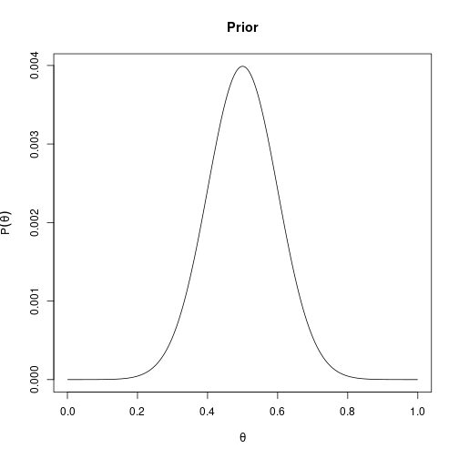
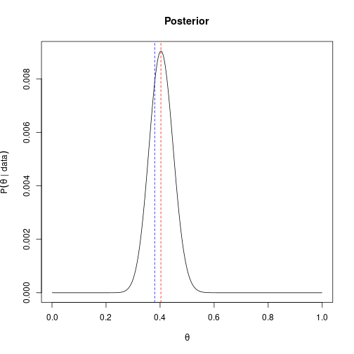
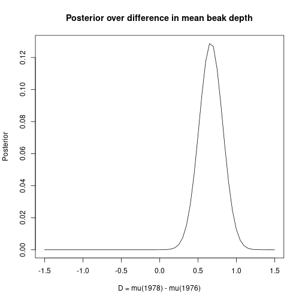

Maximum likelihood, in a way, is an arbitrary thing. We just say: I have this formula for computing the likelihood; I want the maximum-likelihood estimate; that is going to be my estimate. That is not a rule. That is just a thing that people do.
Bayesian inference, in a way, is just looking at this in more detail and generalizing this kind of thinking.
Suppose you have this kind of situation: you have a coin. You toss it 100 times. It came up heads 65 times and tails 35 times. The question is is the coin fair? A fair coin would be one whose true probability of landing heads is 50%.
If the actual question is “is the coin fair?”, the way to answer it is not to compute the maximum likelihood (\(\hat\theta = 0.65\)), notice that this differs from 0.5, and conclude that the coin is not fair. That is silly because the maximum likelihood is never going to be exactly 50%, even with a fair coin.
Here’s one way to think about it: we can never actually say with certainty whether the coin is fair or not — it is a physical object. What we can say is what we believe about the probability of heads. We want to have a function \(P(\theta)\) that encodes our belief about what \(\theta\) is.
To be clear: if you have taken an introduction to statistics, it is highly unlikely that people have talked to you about it this way. The standard thing is to ask whether you have strong evidence against the coin being fair, which is what we will do later when we look at hypothesis testing. Here we are doing the more principled thing first.
What does it even mean for a coin to be fair? It means it’s such a perfect coin that if you toss it infinity times it’ll come up heads 50% of the time. What does it mean to toss a coin infinity times? It’s not a thing. And the coin will change over time — as you toss it, you scruff it; it will change. So maybe it was fair, and then it’s not.
But asking “what is \(P(\theta = 0.5)\), what is \(P(\theta = 0.51)\), …” is much less philosophically dicey.
We use Bayes’ rule. If we have some prior beliefs about what the coin might be like, then:
\[P(\theta = \theta_k \mid \text{data}) = \frac{P(\text{data} \mid \theta = \theta_k)\, P(\theta = \theta_k)}{P(\text{data})}.\]
Using the law of total probability:
\[P(\text{data}) = \sum_i P(\text{data} \mid \theta = \theta_i)\, P(\theta = \theta_i).\]
So you have access to everything you need.
The intuition for \(P(\text{data})\): if my belief is that the coin is roughly fair, and the coin came up 999 times tails and 1 time heads, the probability of the data is low. If my belief is that the coin is fair and it came up about 50% heads and 50% tails, that probability is high.
There is some trickery in our notation here. We just said “imagine \(\theta\) is a random variable.” But \(\theta\) is not really a random variable — it is not something you observe; it is a property of the coin that you never actually know. And it is fixed: whatever the coin is, it has a \(\theta\), you just don’t know it.
So there is uncertainty there, but it’s not uncertainty about what’s going to happen — it’s uncertainty about what the property of the coin is, that we can’t measure directly.
One way to resolve it is to say: it’s fixed for every given coin, but I don’t know what coin you gave me. The way I interpret it is that you gave me a random coin from all the coins you could possibly have given me, and that’s the randomness. (This is satisfying for coins; less satisfying for things like the free-fall acceleration \(g\).)
A common question: when should you use MLE vs maximum-a-posteriori (MAP)?
Argument for MLE: it’s all well and good to say you have a prior belief, but actually specifying what that belief is is hard. If you don’t have \(P(\theta)\) written down — which you usually do not — then the Bayesian formula is just a formula you cannot use.
Argument against MLE (and for Bayesian): you clearly would not just say \(\theta = 0.65\) if you get 65 heads and 35 tails. This is especially true about coins because, as it happens, making a coin that is not fair is actually really difficult. (Loaded dice are easy — you make one side heavier and it falls on that side more. But a coin has only two sides, and making one side heavier doesn’t do anything. So if you are specifically interested in coins, you probably have a strong prior.)
A more substantive argument: suppose you have data with a clear outlier. The MLE for the line gets pulled way down by the outlier. If you have prior knowledge that the line should not be that steep, you can use a Bayesian approach to automatically downweight the outlier. The standard advice is “just throw away the outlier and run MLE” — but that’s a procedure, not a mathematical model. The Bayesian framework lets you do this principled.
In a way, you are almost always doing Bayesian inference. It’s just that a lot of the time you are doing it kind of manually — for example by throwing away outliers, or by saying “if the conclusion seems implausible, I’ll try something new”.
Let’s do this computationally.
set.seed(2)
secret_theta <- 0.42
n <- 100
y <- rbinom(n = n, size = 1, prob = secret_theta)We want our prior to encode “the coin is probably close to fair, but maybe not exactly.” Use dnorm (the normal density), centered at 0.5 with a small SD:
thetas <- seq(0.001, 0.999, by = 0.001)
prior_unnorm <- dnorm(thetas - 0.5, sd = 0.1)
# Normalize to a probability mass on the grid:
prior <- prior_unnorm / sum(prior_unnorm)
plot(thetas, prior, type = "l",
xlab = expression(theta), ylab = expression(P(theta)),
main = "Prior")
This is just the density of the normal distribution. It is higher near 0.5 and lower the further away from 0.5. The densities are not themselves probabilities — that’s why we normalize by their sum on the grid.
This is what we had in the MLE topic:
log_likelihood <- function(y, theta){
sum(y * log(theta) + (1 - y) * log(1 - theta))
}For every \(\theta\) in the grid, compute the posterior:
\[P(\theta_k \mid \text{data}) \propto P(\text{data} \mid \theta_k)\, P(\theta_k).\]
The denominator \(P(\text{data})\) does not depend on \(\theta_k\), so for plotting and finding the MAP we can ignore it.
We work in log space, then exponentiate:
log_post <- sapply(thetas, function(t) log_likelihood(y, t)) + log(prior)
# Numerical safety: subtract the max so exp doesn't underflow:
log_post <- log_post - max(log_post)
post_unnorm <- exp(log_post)
post <- post_unnorm / sum(post_unnorm)
plot(thetas, post, type = "l",
xlab = expression(theta), ylab = expression(P(theta ~ "|" ~ data)),
main = "Posterior")
abline(v = mean(y), col = "blue", lty = 2)
abline(v = thetas[which.max(post)], col = "red", lty = 2)
The blue dashed line is the MLE (sample mean). The red dashed line is the MAP — and you’ll see it is pulled toward 0.5 by the prior.
What we get is: the posterior is maximized around 50% (because the prior pulls it that way), and then it “kind of gets broken” on the sides where the likelihood disagrees more strongly. The mean of y is around 0.41 and the MAP is pulled a little toward 0.50 — exactly because of the prior we chose.
Now let’s do the same kind of thing but for the difference between two population means, using Darwin’s finches. The frequentist treatment of this problem (p-values, hypothesis tests) is in another topic; here we treat it Bayesian-style.
Let \(\mu_1\) be the mean beak depth in 1976, \(\mu_2\) the mean in 1978, \(D = \mu_2 - \mu_1\) the difference.
We want \(P(D \mid \text{data})\). By Bayes’ rule:
\[P(D \mid \text{data}) \propto P(\text{data} \mid D)\, P(D).\]
We need a prior \(P(D)\). One thing we can say is “I have no idea”, meaning a flat prior: assign the same probability to every possible difference between the populations.
library(Sleuth3)
finches <- case0201
head(finches)## Year Depth
## 1 1976 6.2
## 2 1976 6.8
## 3 1976 7.1
## 4 1976 7.1
## 5 1976 7.4
## 6 1976 7.8The data set has the year in which each bird was caught (1976 or 1978) and the depth of its beak. The 1977 drought left only large tough seeds available; the hypothesis is that only finches with deep beaks survived, so the 1978 birds should have deeper beaks on average.
Our model is: depths in year 1 are \(N(\mu_1, \sigma^2)\), depths in year 2 are \(N(\mu_2, \sigma^2)\). So we say: assuming the two means are \(\mu_1\) and \(\mu_2\), what is the likelihood of the actual measurements?
\[\log L(\mu_1, \mu_2) = \sum_{i \in \text{1976}} \log \phi(d_i; \mu_1, \sigma) + \sum_{j \in \text{1978}} \log \phi(d_j; \mu_2, \sigma),\]
where \(\phi\) is the normal density. dnorm(..., log = TRUE) gives us the log density directly:
sigma <- sd(finches$Depth) # rough estimate
depths_76 <- finches$Depth[finches$Year == 1976]
depths_78 <- finches$Depth[finches$Year == 1978]
log_lik <- function(mu1, mu2){
sum(dnorm(depths_76, mean = mu1, sd = sigma, log = TRUE)) +
sum(dnorm(depths_78, mean = mu2, sd = sigma, log = TRUE))
}The difference \(D = \mu_2 - \mu_1\) can come from many different \((\mu_1, \mu_2)\) pairs. We want to accumulate evidence for each value of \(D\) across the consistent pairs.
mus <- seq(7, 12, by = 0.05) # plausible means for finch beaks
D_grid <- seq(-1.5, 1.5, by = 0.05) # plausible differences
# For each D, sum likelihood contributions across all (mu1, mu2) with mu2 - mu1 = D:
log_post_D <- rep(-Inf, length(D_grid))
for(mu1 in mus){
for(mu2 in mus){
# Which D bin does this pair land in? Match on the rounded value: seq()
# carries floating-point fuzz (e.g. -0.05 is stored as -0.04999...), so we
# must round both sides before comparing or the bins won't line up.
i <- match(round(mu2 - mu1, 2), round(D_grid, 2))
if(!is.na(i)){
ll <- log_lik(mu1, mu2)
# log-sum-exp accumulate (the -Inf starting value is handled correctly)
m <- max(log_post_D[i], ll)
log_post_D[i] <- m + log(exp(log_post_D[i] - m) + exp(ll - m))
}
}
}
# Prior is flat, so log P(D) is constant and drops out.
log_post_D <- log_post_D - max(log_post_D)
post_D <- exp(log_post_D)
post_D <- post_D / sum(post_D)
plot(D_grid, post_D, type = "l",
xlab = "D = mu(1978) - mu(1976)", ylab = "Posterior",
main = "Posterior over difference in mean beak depth")
The posterior on \(D\) is concentrated around the empirical difference between the two sample means.
In a way, this whole thing is a complicated way of getting at maximum likelihood, because with a flat prior the \(D\) at which the posterior is maximized is the \(D\) with the highest likelihood (the prior contributes \(\log 1 = 0\) everywhere).
If we had a more specific prior — for instance, if we believe from biology that beaks can only change so much over the years — we would bias the estimate for \(D\) towards zero. Concretely, replace log P(D) = 0 with something that is larger for small \(D\) and smaller for large \(D\) (e.g. \(\log \text{dnorm}(D, \text{sd} = 0.2)\)). That pulls the posterior toward small \(D\).
This is the essence of Bayesian thinking: prior beliefs about plausible values get combined with the likelihood from data to give a posterior. With weak priors, you basically recover MLE; with strong priors, the prior shapes the answer.